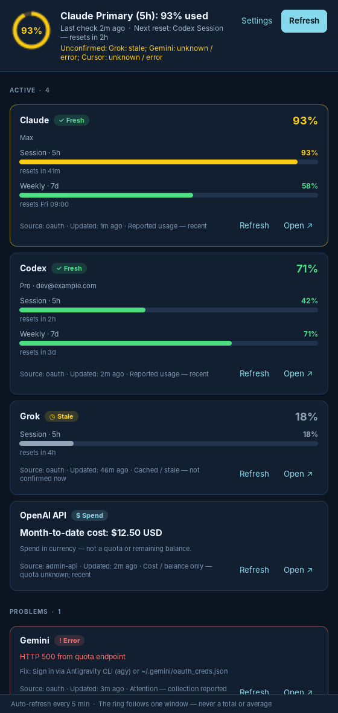
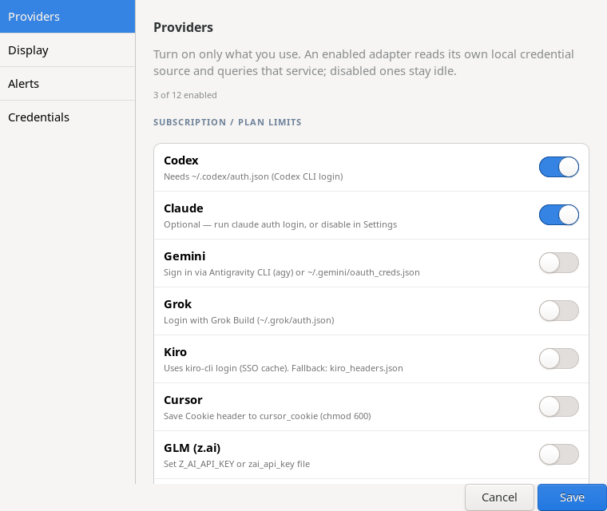

Por dentro do QuotaLantern.
As telas do app: o menu da bandeja, as configurações e a janela Overview. Nada aqui consulta provedores, e o texto do app é em inglês, como no programa.
Fig. 3Menu
O menu começa pelo anel.
As primeiras linhas explicam o que o ícone mostra: qual janela, de onde veio o dado, quando foi lido e o que ficou sem confirmação.
- Cor só para leituras confirmadas. O Grok, com leitura antiga, aparece em cinza.
- Cada provedor abre um submenu com as janelas, o reset, a conta e a origem do dado.
- Abrir a Overview e atualizar ficam no primeiro nível, sem submenu.
Fig. 4Settings
Cada opção diz o que faz.
Quatro páginas, Providers, Display, Alerts e Credentials, com uma linha de explicação embaixo de cada controle.
- Um interruptor por provedor, separados entre limite de plano e custo de API.
- Os níveis de alerta são conferidos: o aviso precisa ficar abaixo do crítico para salvar.
- Arquivos de credencial mostram só se existem e qual a permissão. O conteúdo nunca aparece.
- O login do OpenCode Go acontece no navegador, com código e opção de cancelar.
- Anúncios de reset globais, vindos do codex-resets.com, são opcionais e ficam desligados por padrão.
Fig. 5–6Capturas
A interface de verdade.
Renderizadas fora da tela a partir do código deste repositório, com dados inventados e sem consultar provedores. Fonte e tema seguem o desktop. Na Overview, F5 ou Ctrl+R atualizam e Esc fecha.

